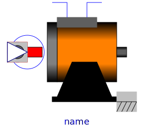
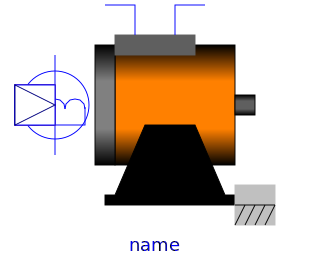
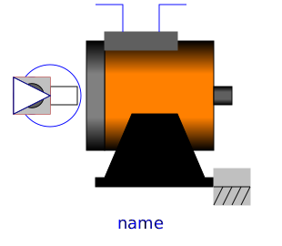

This package contains various synchronous induction machine models.
| Name | Description |
|---|---|
|  SM_PermanentMagnet | Permanent magnet synchronous machine with optional damper cage |
|  SM_ElectricalExcited | Electrical excited synchronous machine with optional damper cage |
|  SM_ReluctanceRotor | Reluctance machine with optional damper cage |